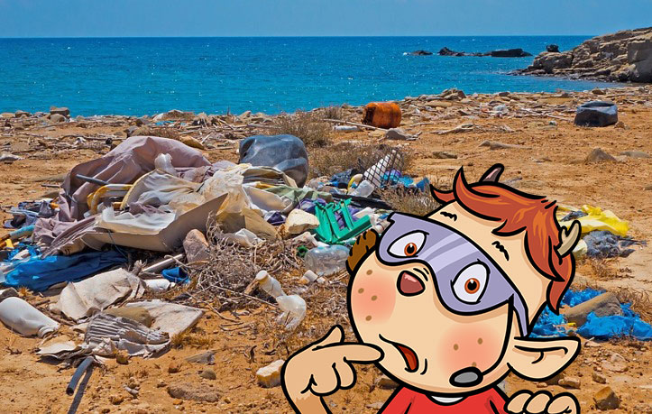
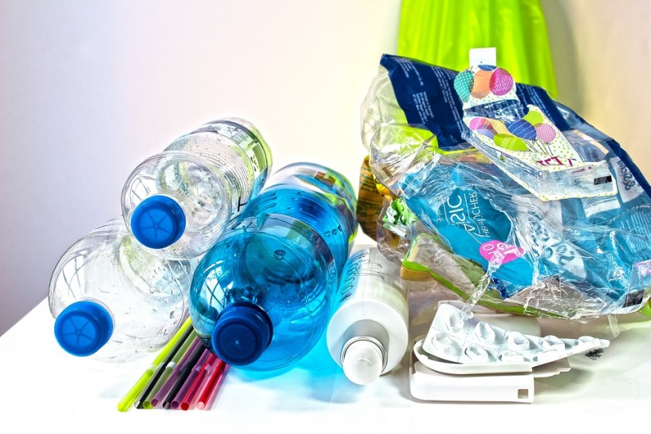
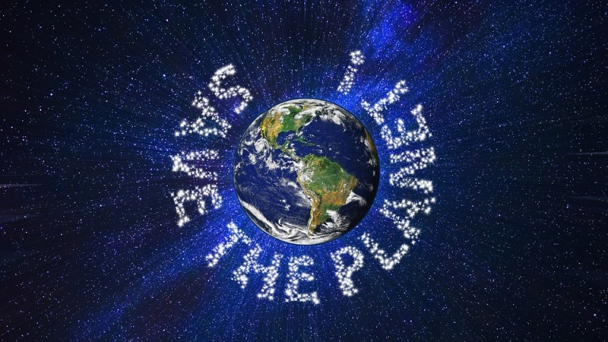

Schone die Umwelt und vermeide Plastikmüll!
Wir haben dazu einige Tipps für dich!
Zunächst erklären wir dir aber, warum wir alle weniger Plastik verbrauchen sollten.
Plastik ist überall
Hast du heute schon ein Produkt aus Plastik verwendet?
Bestimmt! Denn in unserem Alltag gibt es so viel Plastik.
Joghurtbecher, Zahnbürsten oder Trinkflaschen zum Beispiel.
Auch Obst, Gemüse und andere Lebensmittel sind oft in Plastik verpackt.

Was ist so schlimm an Plastik?
Wenn Plastik im Müll landet und verbrannt wird, entstehen zahlreiche Giftstoffe in der Luft.
Der Anteil des Plastiks, der recycled, also wiederverwendet wird, ist leider gering. Oft wird der Plastikmüll auch einfach im Meer versenkt. Dort löst er sich auf, schwimmt dann in Form von „Mikroplastik“ durchs Wasser und wird von Meerestieren gegessen.
Diese Tiere haben dann den giftigen Müll in ihrem Körper und wenn wir Fische oder andere Meerestiere essen, gelangen die Giftstoffe auch in unseren Körper.
Pro Jahr sterben ca. 100.000 Meerestiere und 1 Million Vögel durch Plastik.
Wie kannst du Plastik vermeiden?
Videoclip:
Die Tipps zum Nachlesen:
• Nimm eigene Stofftaschen mit, wenn du zum Einkaufen gehst. Auch Obst und Gemüse kannst du in selbst mitgebrachten Stofftüten oder –netzen transportieren. Kaufe Obst und Gemüse auch mal auf dem Markt!
• Benutze zum Trinken Flaschen aus Metall, Glas oder Mehrweg-Flaschen. Auch Strohhalme gibt es mittlerweile aus Papier, Metall oder Glas. Unterwegs nimmst du am besten eine Brotzeitbox und keine Wegwerftüten mit.
• Vermeide Frischhalte- und Alufolie, um Lebensmittel aufzubewahren. Nutze stattdessen Boxen oder Wachstücher, die abwaschbar und wiederverwendbar sind.
• Suche dir Spielzeug aus, das wenig oder kein Plastik beinhaltet.
• Schreibe mit Füller oder Bleistift, denn Kugelschreiber oder Druckbleistifte stecken auch in Plastikhüllen.
• Wasche dir die Hände mit Kernseife statt mit Flüssigseife, die du in einer Plastikverpackung kaufen müsstest. Sogar Shampoo gibt es mittlerweile als Seifenstück und auch Zahnbürsten kannst du aus Bambusholz kaufen.
• Trage Klamotten, die aus Naturfasern, wie Baumwolle, Viskose oder Leinen bestehen, nicht aus den Chemiefasern, wie Polyester.
• Gestalte deine nächste Geburtstagsparty plastikfrei: vermeide Plastikteller und -besteck, Luftballons und Einweg-Girladen. Es geht auch ohne!
Niemand ist perfekt, aber wenn alle ihr Bestes tun, haben wir schon eine Menge unnötiges Plastik eingespart. Wir sollten gemeinsam an unsere schöne Erde denken und versuchen, die Umwelt zu schonen anstatt sie mit Plastik zuzumüllen. Denn nur so wird es der Erde und uns Menschen auch in Zukunft gut gehen.
Vielen Dank für deine Mithilfe!
